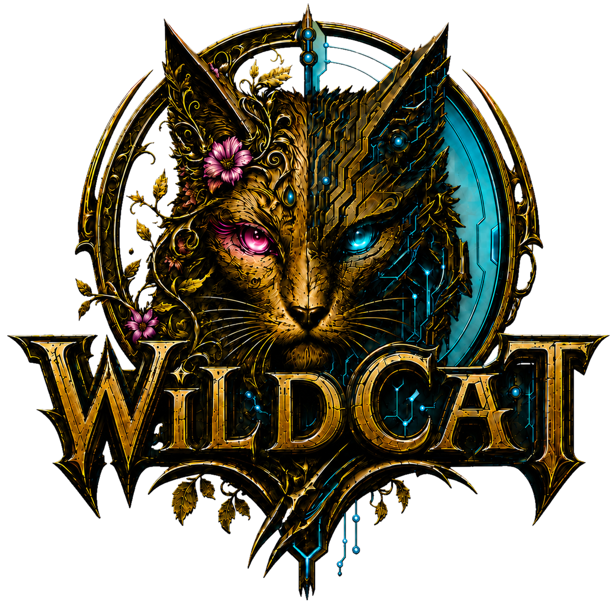

Votre compagnon Ubuntu Gaming
Linux Doctor Gamer Edition
Préparer simplement Ubuntu pour Steam, Proton, les manettes et GeForce NOW.
LinuxSteamNVIDIA GeForce NOW
Bilan gaming
Bonjour
Analyse en cours…
Chargement du rapport…
—/ 100
Socle mesuré : stockage + graphismes
Les petites victoires
😺 Ce qui est déjà prêt pour jouer
Les bons signaux utiles, juste après le bilan général.
Par où commencer ?
Les vérifications pour bien jouer
Choisissez un onglet pour afficher son diagnostic détaillé.
Conseils et vérifications
Diagnostic guidé
Historique
Depuis votre dernière analyse
Crédits
WiLDCaT — vision produit et créateur du projet.
Linux Doctor est un assistant gaming local et open source. Tux est la mascotte de Linux ; Steam et NVIDIA GeForce NOW sont des marques de leurs propriétaires. Données tarifaires France : CRE. Icône Steam : Wikimedia Commons.